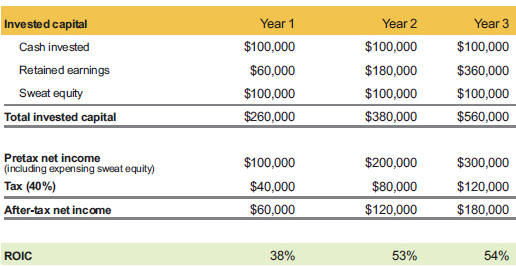
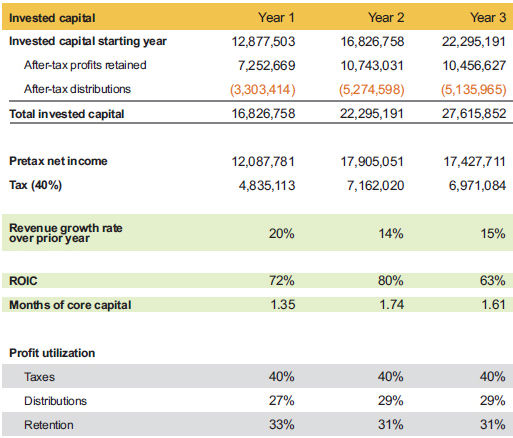

Let’s apply the concepts of invested capital and returns to a sample business case. Your pretax profit is simply your annual return on your investment, and you have to pay tax on your profit. In this sample case, assume that the cash for taxes will come from the business, regardless of whether the business pays the tax directly or if the profit flows through to your personal tax return and you pay the tax personally. If you decide to leave some or all of the profits in the business, your invested capital increases by the amount you retain in the business.
In table 2.2, the business owner invested $100,000 to start the business and performs a job within the business that should pay $100,000 per year, but they go without pay in the first year (sweat equity). This is the same as putting $200,000 into a business as an investor and hiring someone else to run it. After the first year, the owner begins to take a market wage but leaves the sweat equity in the invested capital calculation, remembering that it was a key part of the original investment.
Sample case: Invested capital and returns

Table 2.2 assumes an average tax rate of 40% and assumes that all after-tax profits were left in the business as retained earnings, which also adds to the invested capital balance. This example is uncommon for a start-up business that does $1 million to $2 million in revenue during the first couple of years in business, mostly because many entrepreneurs try to withdraw the early profits or waste them in an effort to avoid paying taxes. The scenario in this sample business case should be the norm for early capitalization, and it is what we advise our clients to do. Unfortunately, a lot of entrepreneurs do not understand this strategy, and it leads to early failures for start-ups.
Notice the ROIC in table 2.2. In the first year, the business owner got 38%, which is no different than investing $200,000 in a certificate of deposit with a 38% interest rate. You would have earned $100,000 in interest, paid 40% tax (or $40,000), and if you are like most people, you would have reinvested the profits. Technically, the rate of return is 50% ($100,000 pretax net income divided by $200,000 original capital), but table 2.2 shows the year-1 after-tax net income as part of the capital base, like a normal balance sheet, since you do have access to cash generated from profits during the year to help you make more profit.
If you think 38% ROIC is good in year 1, it increases to more than 50% in years 2 and 3 (see table 2.2). I have studied the business profit and capital structure of hundreds of businesses. Every business that was at the proper capitalization levels and had less than 50% ROIC struggled with cash flow and sustainability. If a business is highly leveraged, the ROIC will be even higher, but it is a false sense of success since it comes from overleveraging the business, and it will suffer if credit becomes tight. The only sustainable businesses with an ROIC less than 50% are the ones that have excess cash in the business (that is, beyond two months of operating expenses).
An ROIC of 50% or more is a pretty good rate of return without selling the business! A high rate of return like this puts you in an optimal position to demand a premium sale price for your business, or you can walk away.
Real-World Business Case
Since we use a common profit and loss format (our proprietary Simple Numbers Profit Model, discussed in Chapter 5) for the clients we work with, it is easy to aggregate data so we can study trends and business outcomes in our client base. The data in table 2.3 comes from 50 companies we work with across the US from all the basic industries (manufacturing, retail, services, and technology). By using an aggregate of 50 companies, the outcome is far more compelling than data from a single business. In selecting the 50 companies, we did not pick just the winners; we chose the first 50 companies for which we had complete data during the time period we studied and who we thought we would have ongoing data from so we could continue to study economic trends.
Real-world case: Invested capital and returns

The beginning invested capital in year 1 represents the equity balance to start the first year of analysis. Many of the companies in this data set had sweat equity, but that number is not shown in table 2.3.
Table 2.3 presents a good waterfall view of what really happens in business:
In the group of 50 companies represented in table 2.3, the revenue growth was between 14% and 20% for three years! None of them needed outside capital for growth, and as a group they averaged 1.5 months of operating expenses in cash (all labor costs plus operating expenses). This flies in the face of the common belief that you need outside capital to grow. Not only did these companies grow without outside capital, they distributed cash profits of 27% to 29% to the investors each year. The profit distribution varies from year to year since it cannot be determined until after taxes and reinvestments.
I have not mentioned anything about revenue other than the annual growth rate. Revenue is the most slippery number on your profit and loss statement. It is just the start of the math. The real key performance indicators you should focus on are ROIC and the volume of your investment. If you compound interest at a rate of 50% to 100%, it grows quite nicely, as shown in table 2.4.
Of our clients who are skilled at running a business, I would say that 75% ROIC is the most common data point. For our clients who have over $5 million in revenue, the average moves closer to 90%. As you get bigger, your cost structure should get more efficient. The challenge companies face is reinvesting in the business and getting the same return. Effectively reinvesting requires two things: (a) the market must accept your product or service at the current price point; and (b) if the market demands more, you need to be able to deliver at the same, or a better, cost.
When an entrepreneur says they could grow if they had access to capital, they really mean they could grow if they could use someone else’s cash who could afford to lose it if their idea does not work. They are not willing to spend their own profits and risk losing them if they are wrong about what it takes to grow. That may sound harsh, but the data suggests it is true. In our 50- company data set, the entrepreneurs took out roughly a third of their profits to do other things. As much as you might like to think they were using the funds to diversify their investments, the funds were mostly used for consumption. Also, keep in mind that all these companies are following our guidelines for market-based wages for the job they do in the business, and most of them are at the high end of the market-based wage range.
There is nothing wrong with consumption, but it does speak to how entrepreneurs truly act. Any business owner who consumes profits from the business to fund their lifestyle is on a slippery road to entrepreneurial hell because there will be some years when the business will not make a profit, but the consumption will continue. The only source to fund consumption in those years is to diminish the capital base of the business or, even worse, use company debt sources to keep up distribution demands. This is the key reason why businesses fail during recessions. Our clients thrived during the previous recession, and many had their most profitable years because they were fully capitalized and could take advantage of their weakened competitors.
Entrepreneurs become more risk averse as they become more successful and make enough to live on comfortably. There is a place for outside capital, and there is a place for reinvestment of profits; you need to be aware of when to use which strategy. Many entrepreneurs who raise outside capital do not focus on getting profitable quickly enough, and this leads to many avoidable start-up failures. On the other hand, you need to know how to set expectations for the returns needed on reinvestments, and you need to hold your team accountable for results.
The Black Art of Marketing for Growth
I was having dinner one night with my good friend Dan Martell, and we were discussing business (as I am prone to do). A thought hit me about how simple (but not easy) it is to grow a business. I told Dan, “If you can figure out what the market needs, find a way to do it profitably, and it makes a good return on investment, all that is left is to tell everybody about it.” Since then, as I applied that thought to my clients, I have found that it encompasses the root of the challenge. Notice that it does not say anything about finding money. If I can make a profit doing whatever the market needs, money is not a problem. The growth plan will usually fund itself from profits as fast as I can grow, or I can find capital if I need an up-front investment. I have yet to see a good marketfocused growth initiative that cannot get funded.
If you can find a market need, figuring out how to satisfy it profitably is the easiest part of the equation. The marketing piece is still a bit of a black art. As much as the marketing pros will try to tell you they know how to market your idea if you spend enough, I see more activity than accomplishment in many high-spend campaigns. The real challenge comes when the market becomes insensitive to what has been working, and you have to keep changing your approach. It is almost like driving 100 miles per hour at night with no headlights. The occasional streetlight gives you a glimpse of the road, but not enough to stay out of the ditch.
The main challenge to growth is a poor understanding of what the market needs and an unwillingness to risk profits that you are used to consuming. As the data set from 50 companies showed, those entrepreneurs were motivated to take about a third of the profits out of their business (see table 2.3). They all had opportunities to grow their business further by adding to their geographic reach, lines of business, or deeper penetration in the markets they served.
Are Entrepreneurs Like Cab Drivers?
A classic behavioral economic study looked at cab drivers in New York City. A cab driver rented their car for 12-hour shifts. When the fares were sparse, the cab driver would sit in their car hoping for fares all day. When the fares were plentiful, they quit work at 2:00 p.m. and went home early. At the time of the study, the economists identified $500 of daily earnings as the point at which they stopped being motivated to stay on shift. Could it be that most entrepreneurs quit risking their cash once they have reached their subconscious consumption goal?
I think this is why the second business is the hardest to start for entrepreneurs. They are usually unwilling to do for the second business what made them successful the first time. I often counsel entrepreneurs to consider this before they sell their first business. I suggest that they might consider starting the second business before they sell the first one to make sure they can repeat their success.
If you take the time to understand ROIC with the potential for 75% to 100% returns, wouldn’t you be more focused on growing your business when opportunities arise?